In the summer after my junior year of high school, the Choate Rosemary Hall Chamber Choir and Orchestra was invited to go on a concert tour of East Asia. The trip would include South Korea, Beijing, Xi'an, and Hong Kong, It was truly a once-in-a-lifetime experience. These are the photos I took.
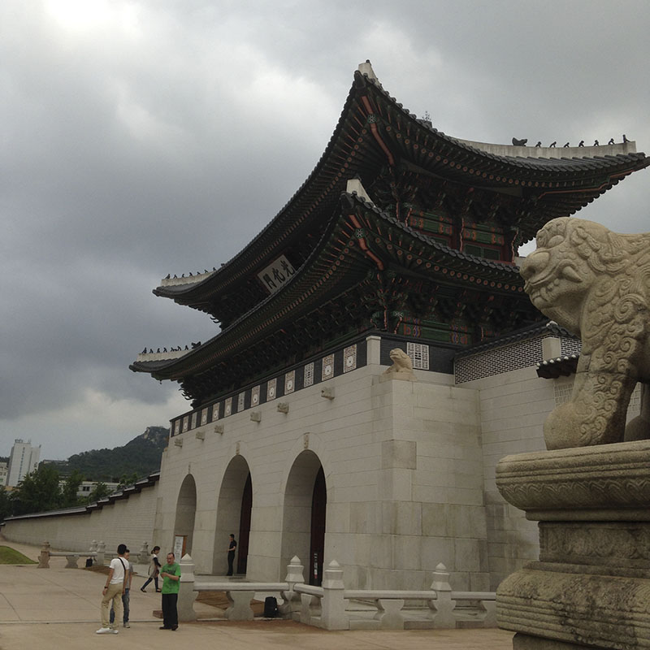We landed at Incheon International Airport and made our way to Seoul's International Coex Hotel. We had a few concerts and joint rehearsals with the local Chadwick School, but outside of the concert hall, we explored Gyeongbokgung Palace, as well as Insadong, a downtown area.
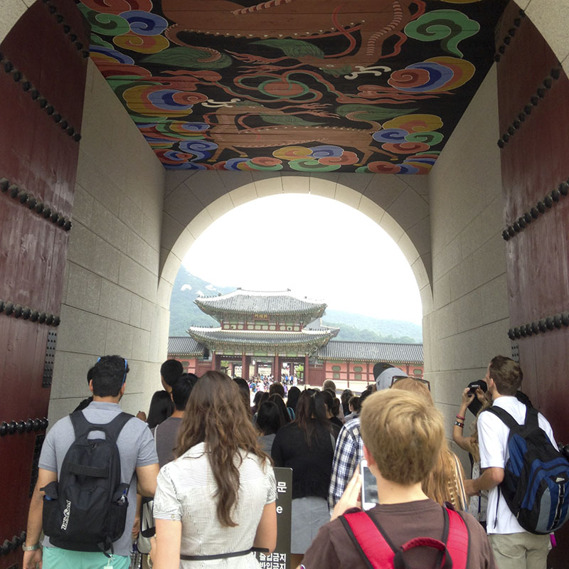 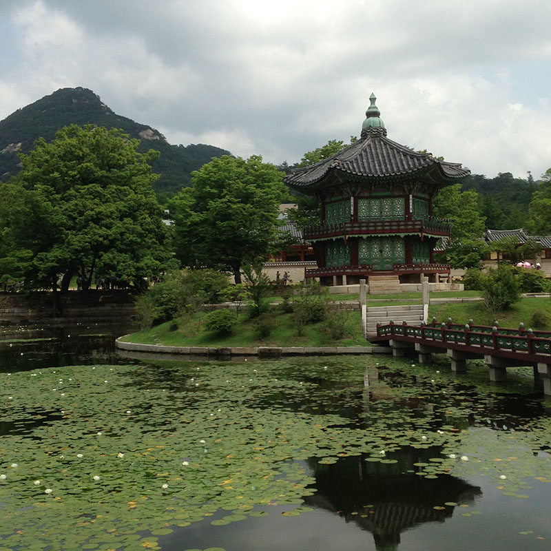 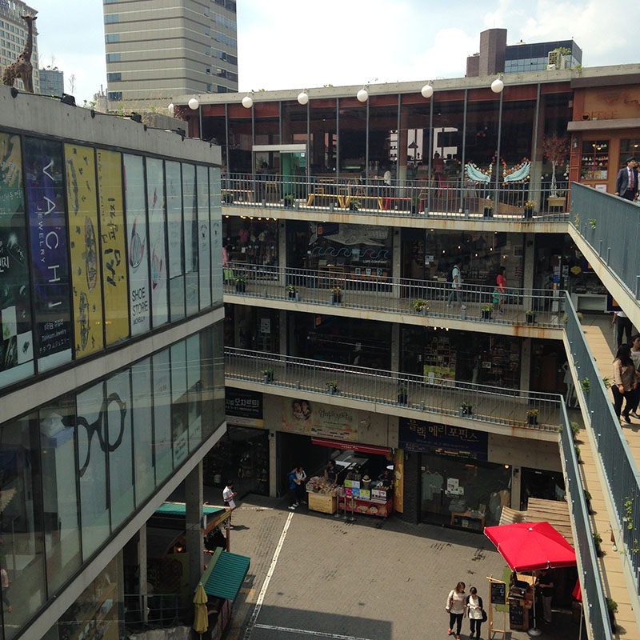We climbed a mountain in the rain, but it was well worth it considering this gorgeous view of downtown Seoul from the top.
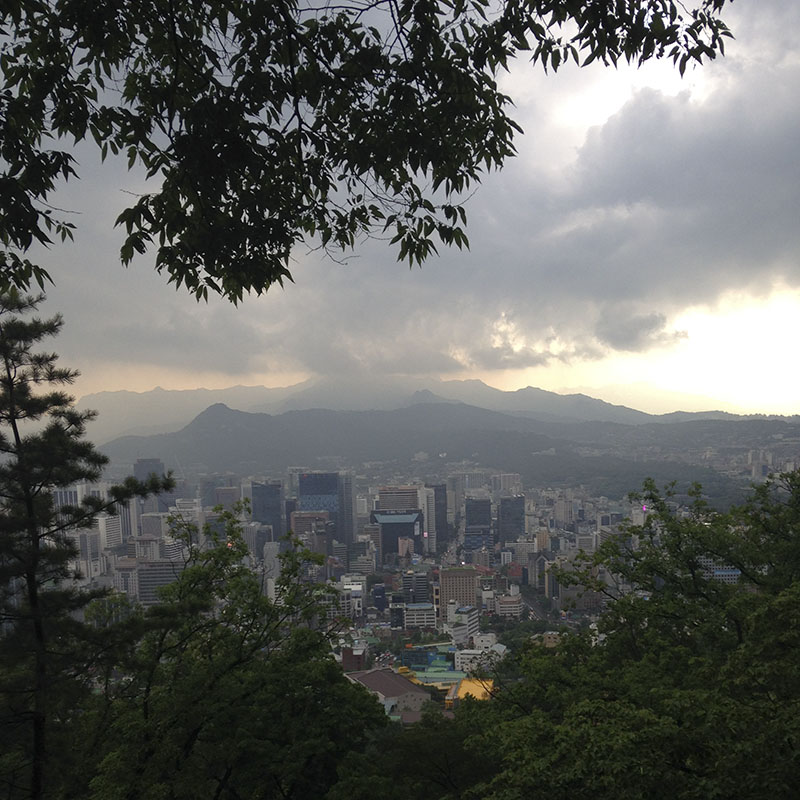 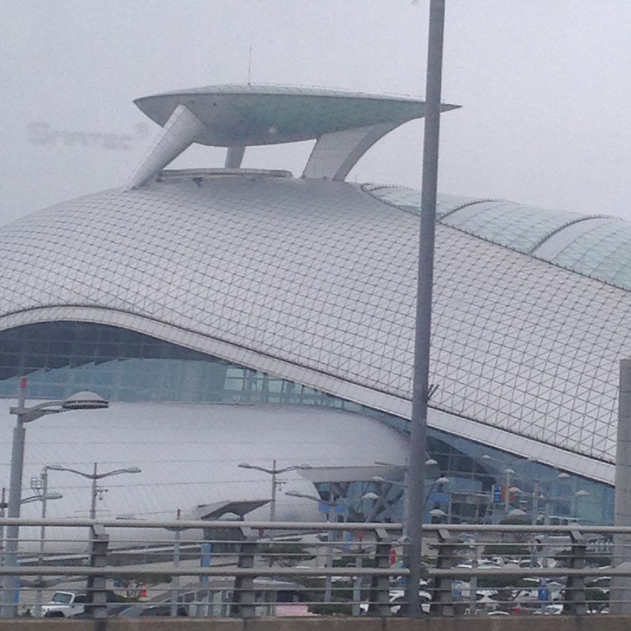After wrapping up our concert series in Korea, we flew to Beijing. The weather was good, and though it was hot, the air pollution wasn't as bad because it had rained the day before. There, for the first time... I saw Tianamen Square, explored the Olympic stadiums, wandered the Forbidden City, and climbed the Great Wall.
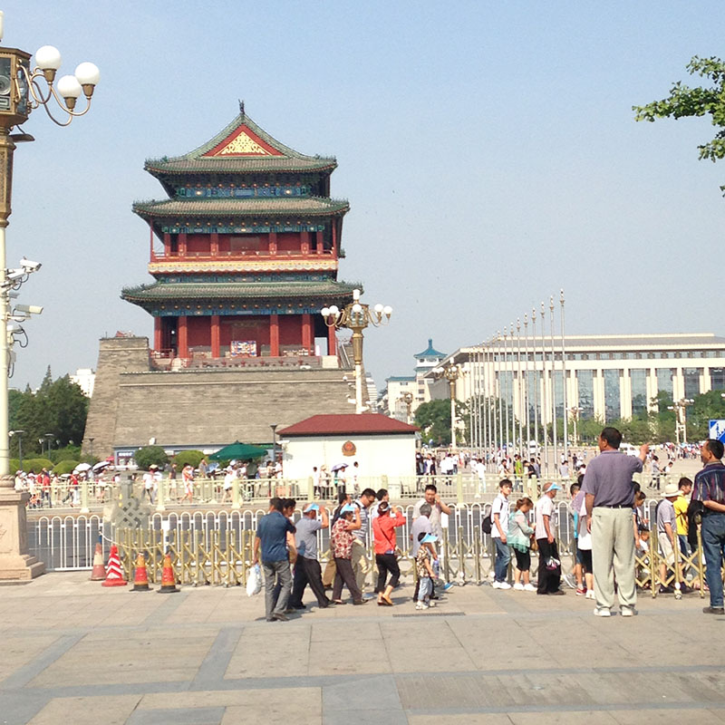You can see Simon, our hilarious tour guide, in his favorite pink polo, wielding this tall sign so nobody would get lost. Thanks, Simon!
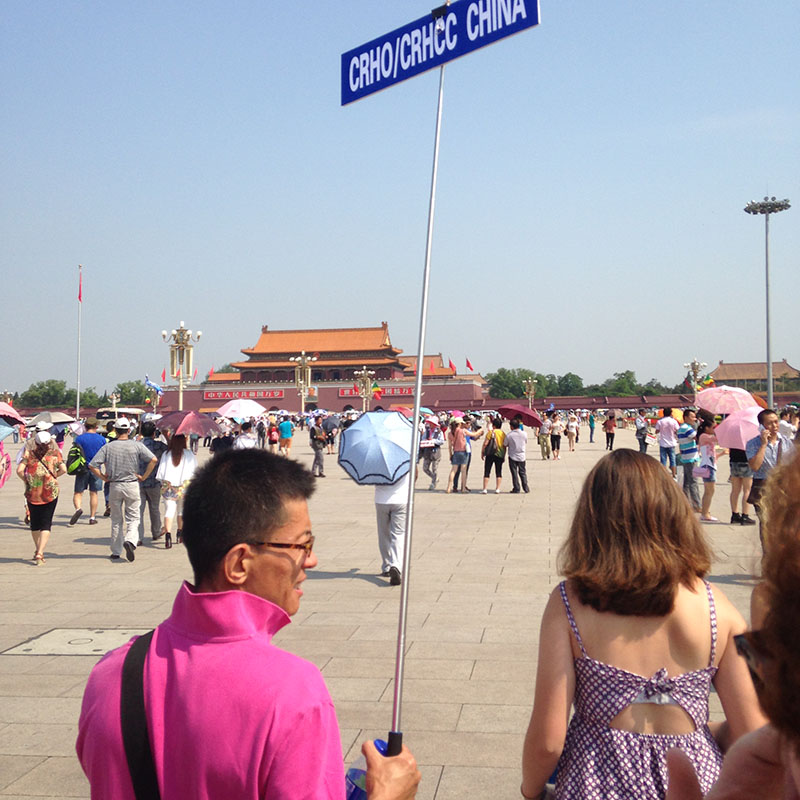 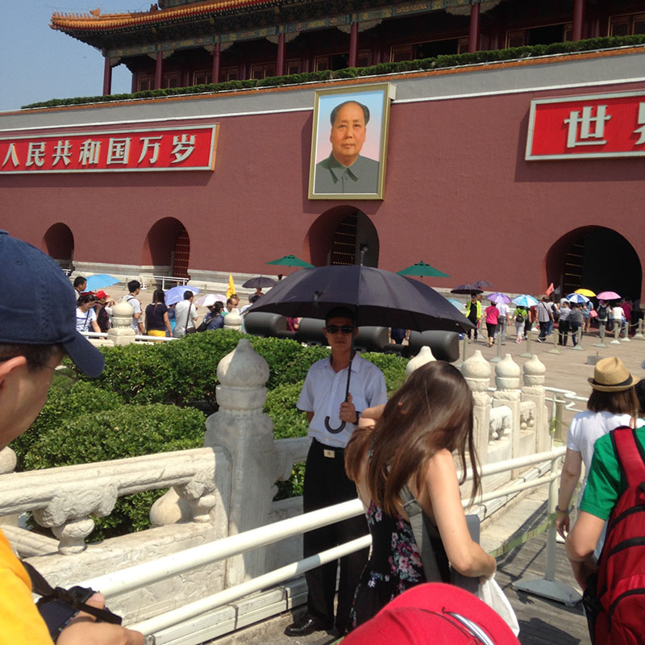 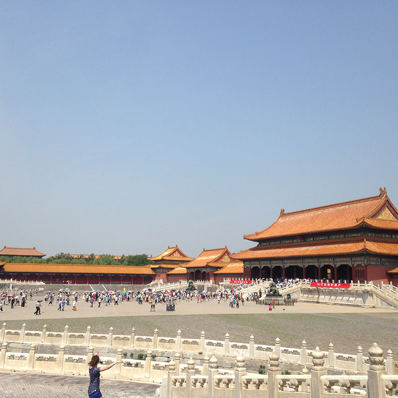One of the most surreal experiences I've ever had- performing literally on the Great Wall. I will never forget the feeling I had.
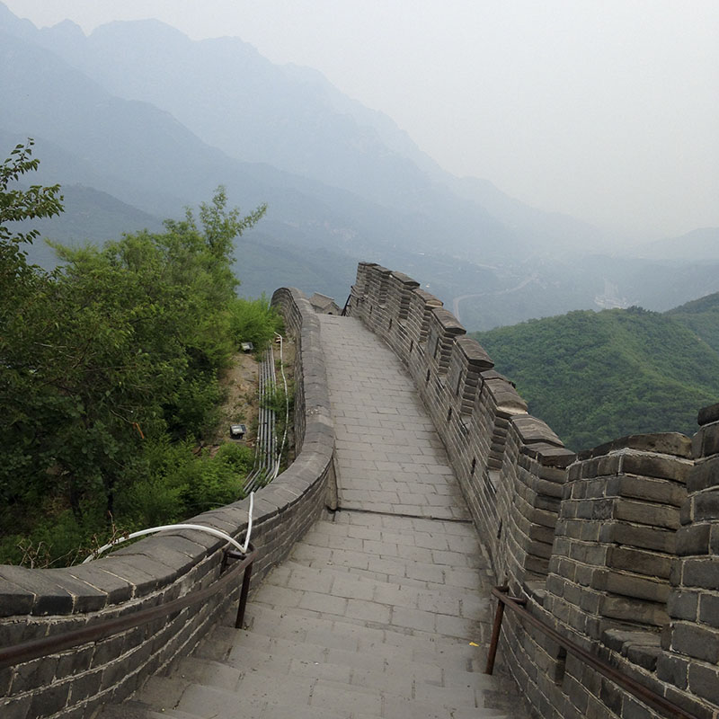 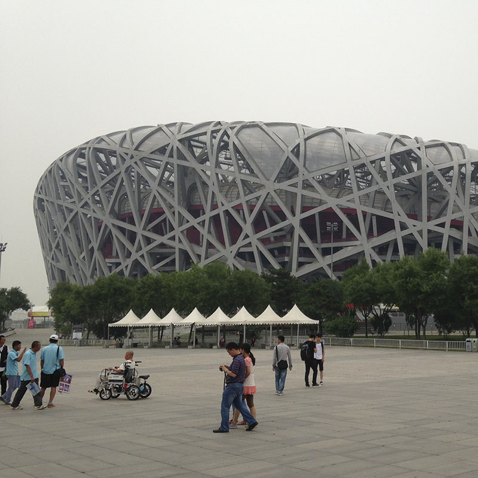 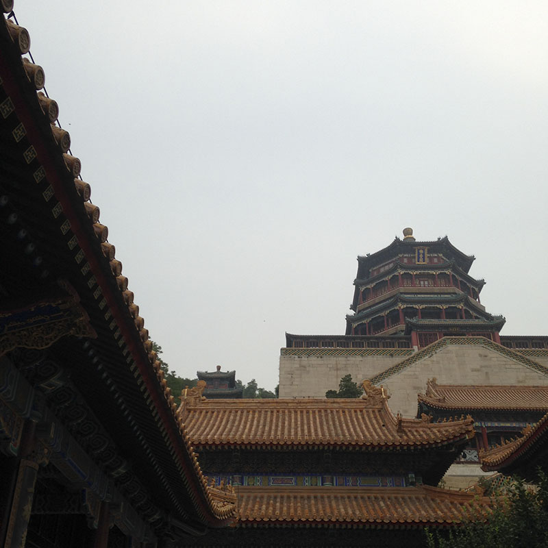We took a pit stop at Xi'an to be super touristy and visit the Terracotta Warriors, and finally, we did make our way to Hong Kong, amidst the sweltering summer heat and heavy humidity.
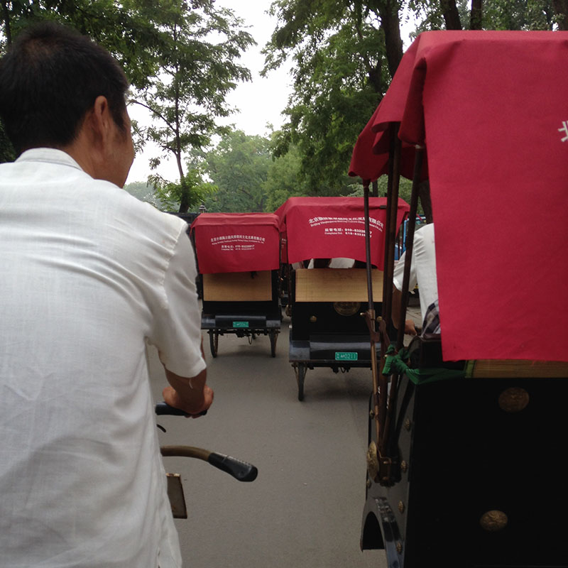Of course it was sad leaving... but I know I will be back!